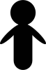
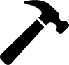

<div id="project">
  <div ng-show="panel==0" class="list">
    <div class="ib">
      <h1>促成的專案有哪些？</h1><a ng-repeat="p in projects" href="{{p.homepage}}">
        <div class="item">
          <div ng-attr-style="background-image:url(img/{{p.img}})" class="snapshot"></div>
          <div class="desc">
            <h3>{{p.name}}</h3>
          </div>
        </div></a>
    </div>
  </div>
  <div ng-show="panel==1" class="detail">
    <div ng-controller="prjDetailCtrl" class="ib">
      <h1>各專案的活躍程度？</h1>
      <h4>透過 google 搜尋 github.com 列出以有設置 g0v.json 為主的專案</h4>
      <hr/>
      <div ng-repeat="p in projects" class="item">
        <div class="name">{{p.name}}</div>
        <h4>{{p.contributors.length}} 位主要開發者</h4>
        <div class="contributors">
          <div ng-repeat="m in p.contributors" class="contributor">
            <div class="user">{{m.user}}</div>
          </div>
        </div>
        <h4>各方貢獻的總數</h4>
        <div class="commits">
          <div ng-repeat="i in range(1,p.commits)" class="commit"></div>
        </div>
      </div>
      <hr/>
      <div class="about">SVG Icons Attribute to following designers:
        <blockquote><a href="http://thenounproject.com/term/man/13731/">"MAN" by Nina Machado</a><br/><a href="http://thenounproject.com/term/man/1306/">"Hammer" by John Caserta</a></blockquote>
      </div>
    </div>
  </div>
</div>